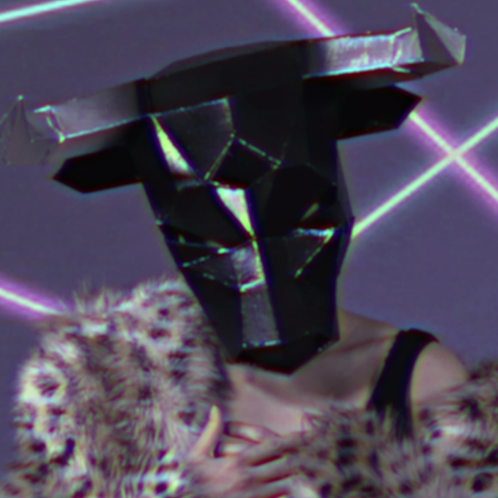

I Am the Riptide

Metallum quod circumit me sum (I am the metal that surrounds me)
Et venenum in osse (I am the poison in the bone)
Et cantus serpentis (I am the singing of the serpent)
Sum fluctus (I am the riptide)
◊◊◊◊◊◊◊◊◊◊◊◊◊◊◊◊◊◊◊◊◊◊
◊◊◊◊◊◊◊◊◊◊◊◊◊◊◊◊◊◊◊◊◊◊◊◊◊◊◊◊◊◊
◊◊◊◊◊◊◊◊◊◊◊◊◊◊◊◊◊◊◊◊◊◊◊◊◊◊◊◊◊◊◊◊◊◊◊◊◊◊
my kadam says how do i know if the demons are
figments or mirrors or signs of a cataract
◊◊◊◊◊◊◊◊◊◊◊◊◊◊◊◊◊◊◊◊◊◊◊◊◊◊◊◊◊◊◊◊◊◊◊◊◊◊
◊◊◊◊◊◊◊◊◊◊◊◊◊◊◊◊◊◊◊◊◊◊◊◊◊◊◊◊◊◊
◊◊◊◊◊◊◊◊◊◊◊◊◊◊◊◊◊◊◊◊◊◊
ILLUMINATI SUITE
The March of the Archons
Ego metallum (I am the metal)
Ego sum lux (I am the light)
Ego draconis (I am the serpent)
Ego Anunnaki! (I am the Anunnaki!)
Thuban (Alpha Draconis)
Et sidus ad draco (The star of the serpent)
Dat lucem veritatis (Gives the Truth and the Light)
Ecce enim pulchra lucet (Behold its shining beauty)
The Moon Matrix/Saturn's Hexagon
Ich wurde in Bayern geboren (I was born in Bavaria)
In die Pyramiden atmete ich (Into the pyramids I breathed)
Ich bin der Schöpfer des Mondes (I am the maker of the moon)
Ich mache die Wellen (I am the maker of the waves)
In der Zeit vor der Zeit (In the time before time)
Kamen wir auf die Erde (We visited the Earth)
Tief in den Wolken von Saturn (Deep in the clouds of Saturn)
Wir schauen (We are watching)
Wir hören zu (We are listening)
Umgeben von Ringen (Surrounded by the Rings)
Du bist nicht allein (You are never alone)
In der Zeit vor der Zeit (In the time before time)
Kamen wir auf die Erde (We visited the Earth)
Brotherhood of Babylon [AUDIO REDACTED]
A stella in Babylonem (From the star of Babylon)
Ut Ezechieli revelatur (As revealed to Ezekiel)
Ut Salomon revelatur (As revealed to Solomon)
Pyramidum secrecto (The secret of the pyramids)
Arcanum es Lux! (The secret is Light!)
lux lux lux lux lux lux lux lux lux lux lux lux lux lux lux lux lux lux lux lux lux lux lux lux lux lux lux lux lux lux lux lux lux lux lux lux lux lux lux lux lux lux lux lux lux lux lux lux lux lux lux lux lux lux lux lux lux lux lux lux lux lux lux lux lux lux lux lux lux lux lux lux lux lux lux lux lux lux lux lux lux lux lux lux lux lux lux